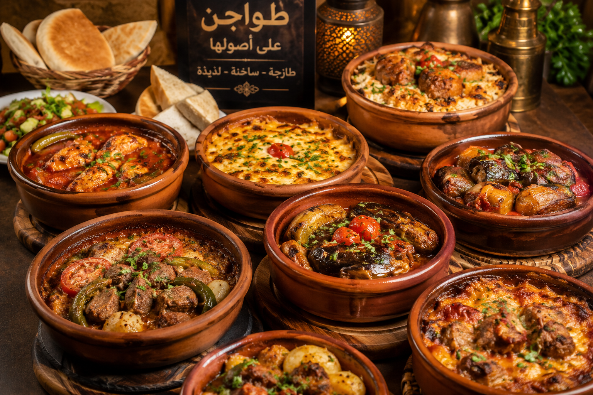

| السعرات الحرارية | اسم الصنف | كبير | صغير |
|---|---|---|---|
| 650 | طاجن المحروسة | 50 | - |
| 600 | طاجن موزة | 45 | 35 |
| 500 | طاجن كوارع | - | 30 |
| 600 | طاجن عكاوي | - | 35 |
| 500 | طاجن لحم بالفاصوليا | 28 | - |
| 500 | طاجن لحم بالبامية | 28 | - |
| 450 | طاجن لحم بالخضار | 28 | - |
| 550 | طاجن لحم بلسان العصفور | 28 | - |
| 650 | طاجن موزة بورق العنب | 50 | - |
| 600 | طاجن كوارع بورق العنب | 45 | - |
| 650 | طاجن عكاوي بورق العنب | 50 | - |
| 600 | طاجن رز معمر باللحمة | 30 | - |